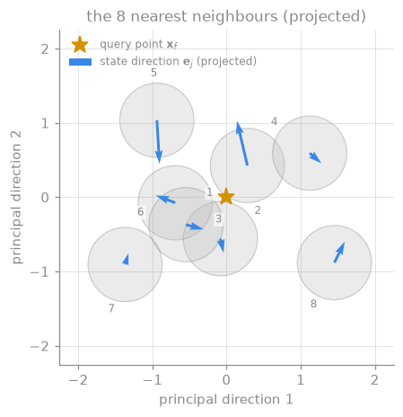
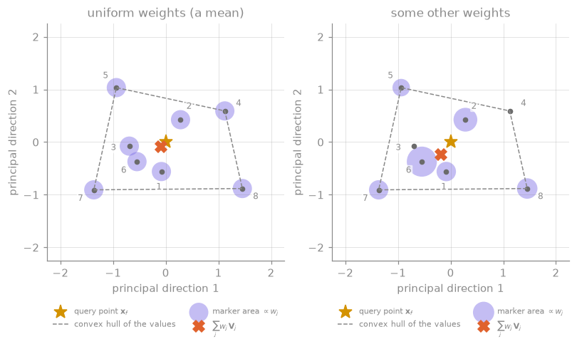
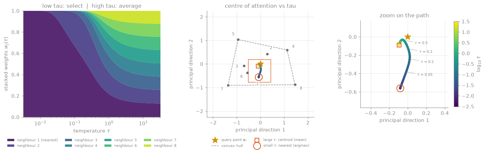
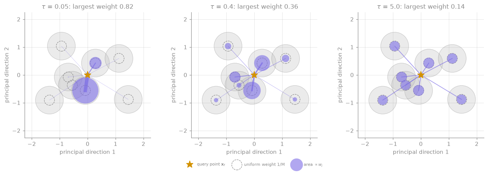
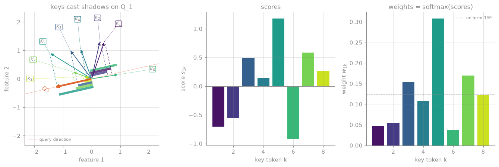
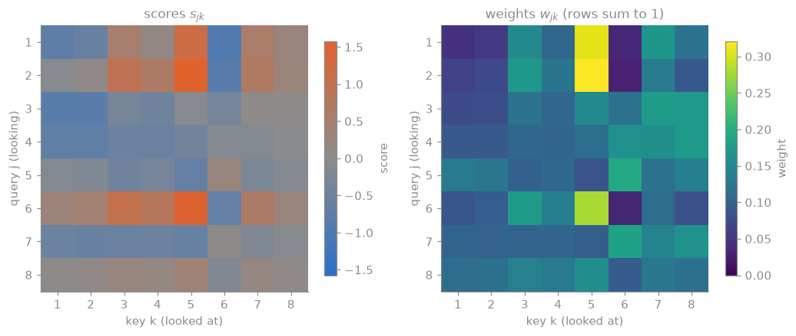
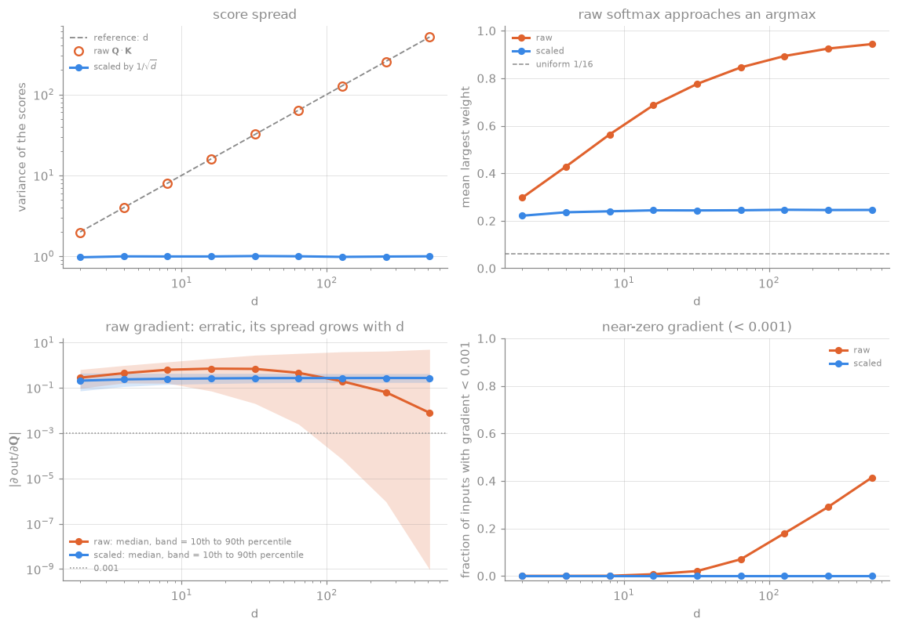
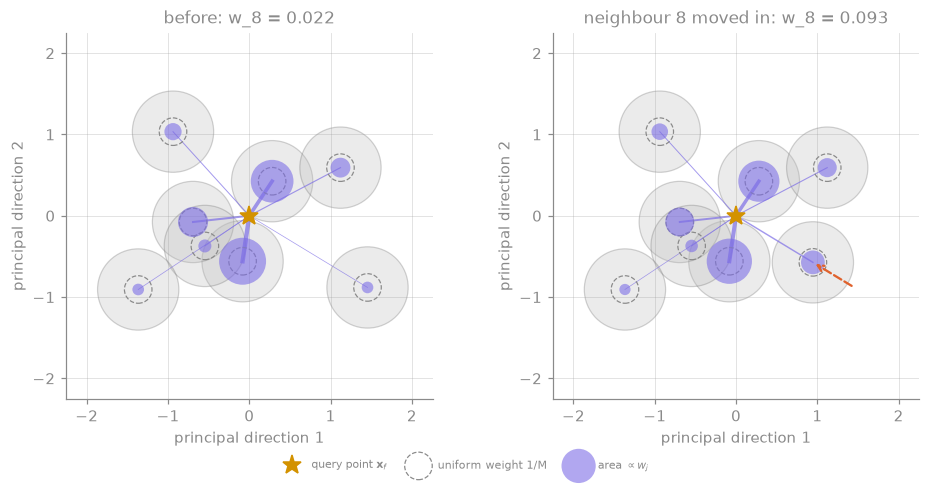

Attention from scratch: queries, keys, values#
What you will learn
Attention is a weighted average of value vectors. The weights are positive, sum to one, and are computed from the data, so the output always lies inside the convex hull of the values.
Softmax turns arbitrary scores into such weights. Its temperature moves it continuously from a plain mean (high temperature) to picking the single best item (low temperature). You will also see why it must be computed in a numerically stable way.
Queries, keys and values are three learned linear maps of the same tokens. The score \(\mathbf Q_j\cdot\mathbf K_k/\sqrt d\) measures how well token \(k\) matches what token \(j\) is looking for. Without the \(1/\sqrt d\), the softmax saturates as \(d\) grows: its gradient becomes near zero for most inputs and large for a few, and its scale depends on the width.
How to write attention by hand in a few lines of PyTorch, and how to check it against
torch.nn.functional.scaled_dot_product_attentionto float64 round-off.
Prerequisites: Lesson 01a (the toy suspension), Lesson 02a (neighbour inputs \(\mathbf x_{fj}\), \(\mathbf e_j\)) and Lesson 05a, which explains why we want neighbours to look at each other. No previous knowledge of transformers is needed. This is the first of four short lessons (05b to 05e) that build a transformer from its parts. Lesson 05f then turns it into model B.
import math, os, time
import numpy as np
import matplotlib.pyplot as plt
import torch
import torch.nn.functional as F
from scipy.spatial import ConvexHull
from course_utils import plotting as cplt
from course_utils.attention import attention as cu_attention, softmax as cu_softmax
from course_utils.equivariance import check_invariance, check_permutation, report
from course_utils.models import neighbour_invariants
torch.set_num_threads(min(4, os.cpu_count() or 1)) # tiny tensors: a few threads are enough
PAL, INK = cplt.PALETTE, cplt.INK
TOL = 1e-12
T0 = time.time()
A word on notation. In this course, lower-case bold \(\mathbf q_j\) is the state of particle \(j\) (its slip). The transformer literature also writes \(q\) for a query. To keep the two apart we use capital bold letters \(\mathbf Q\), \(\mathbf K\), \(\mathbf V\) for queries, keys and values, \(d\) for the query/key length and \(\tau\) for a temperature. As in Lessons 05c and 05f, \(j\) is the token that looks and \(k\) the token it looks at: \(s_{jk}\) is a score and \(w_{jk}\) an attention weight. (The animation S5 writes \(i\) for the looking token and \(j\) for the token looked at, so its \(s_{ij}\) is our \(s_{jk}\).)
1. Neighbours as a set of tokens#
A0 and model B both look at a query point \(\mathbf x_f\) through its \(M\) nearest particles. In transformer language each neighbour becomes a token: a short vector of numbers \(\mathbf h_j\) that describes it. For this lesson the tokens are built from the six invariant features that model B uses (Lesson 05f explains why these six):
Here \(\rho\) is the density ratio, \(\phi_j\) the local volume fraction around particle \(j\), and \(\mathbf x_{fj} = \mathbf x_f - \mathbf r_j\) the offset from the centre \(\mathbf r_j\) of particle \(j\) to the query point.
The six features have different units (a speed, a ratio, a fraction, a length, a cosine), so before using them we standardise each feature across tokens: subtract its mean and divide by its standard deviation, both measured once on a reference batch of 64 query points × 16 neighbours and then held fixed. Two features are constant in this toy: every particle has the same density ratio \(\rho = 2\), and \(\mathbf e_j\) is a unit vector, so \(|\mathbf e_j| = 1\) (it would drop to 0 only for a particle at rest). They carry information across suspensions but not within one, so standardising turns them into 0.
Simplifications. Model B does not feed these six numbers to attention directly. It first lifts each token to a wider hidden vector with a small embedding MLP, and every block then applies LayerNorm over that hidden width (Lesson 05e) and projections \(W_Q, W_K, W_V\) that include a bias term. Here we use the standardised features as tokens and bias-free projections, so that every step stays visible. Nothing in this lesson depends on these choices.
The important word is set. The neighbours have no natural order: “neighbour 3” is just the third-nearest, and nothing about the physics changes if we list them differently. Language models read tokens in order; here we never will.
M = 8 # few neighbours, so every weight is visible
snap = cu.make_snapshot(seed=0)
x_f = snap.sample_exterior(1, rng=np.random.default_rng(3))
inp = cu.neighbour_inputs(x_f, snap.positions, snap.slip, snap.phi_local, snap.density_ratio, M) # float64
H_raw = neighbour_invariants(inp["scalars"], inp["e_j"], inp["x_fj"])[0][0] # (M, 6) raw features
r = inp["x_fj"][0].norm(dim=-1) # distances |x_fj|, nearest first
# reference batch (reused in Section 7): 64 query points x 16 neighbours, for the per-feature statistics
pts = snap.sample_exterior(64, rng=np.random.default_rng(7))
inp_b = cu.neighbour_inputs(pts, snap.positions, snap.slip, snap.phi_local, snap.density_ratio, 16)
Hb_raw = neighbour_invariants(inp_b["scalars"], inp_b["e_j"], inp_b["x_fj"])[0] # (64, 16, 6)
feat_mean = Hb_raw.reshape(-1, 6).mean(0)
feat_std = Hb_raw.reshape(-1, 6).std(0)
feat_std = torch.where(feat_std > 1e-9, feat_std, torch.ones_like(feat_std)) # constant features -> 0
def standardise(h):
"""Per-feature standardisation with the fixed reference statistics (a fixed affine map of each token)."""
return (h - feat_mean) / feat_std
H = standardise(H_raw) # (M, 6) tokens
names = ["|q_j|", "rho", "phi_j", "|x_fj|", "x^.e", "|e_j|"]
print("token j " + " ".join(f"{n:>7s}" for n in names))
for j in range(M):
print(f" {j + 1:2d} " + " ".join(f"{v:7.3f}" for v in H_raw[j].tolist()))
print("standardised tokens h_j (rho and |e_j| are constant here, so they become 0):")
for j in range(M):
print(f" {j + 1:2d} " + " ".join(f"{v:7.3f}" for v in H[j].tolist()))
token j |q_j| rho phi_j |x_fj| x^.e |e_j|
1 0.473 2.000 0.172 0.599 -0.585 1.000
2 0.328 2.000 0.125 0.675 -0.608 1.000
3 0.542 2.000 0.188 0.956 0.322 1.000
4 0.343 2.000 0.172 1.288 0.050 1.000
5 0.313 2.000 0.141 1.402 0.700 1.000
6 0.608 2.000 0.078 1.625 -0.737 1.000
7 0.654 2.000 0.156 1.714 0.464 1.000
8 0.671 2.000 0.109 1.715 0.157 1.000
standardised tokens h_j (rho and |e_j| are constant here, so they become 0):
1 -0.472 0.000 1.965 -2.357 -1.017 0.000
2 -1.004 0.000 0.540 -2.230 -1.057 0.000
3 -0.218 0.000 2.439 -1.758 0.562 0.000
4 -0.948 0.000 1.965 -1.202 0.087 -0.000
5 -1.058 0.000 1.015 -1.011 1.219 0.000
6 0.021 0.000 -0.884 -0.637 -1.282 0.000
7 0.191 0.000 1.490 -0.488 0.809 -0.000
8 0.254 0.000 0.066 -0.486 0.274 0.000
To see the neighbourhood, we project the centres onto the plane in which they spread the most (the two leading principal directions of \(\mathbf r_j - \mathbf x_f\)). The projection loses depth, so two particles that look close in the picture may be apart along the third direction. The arrows are the state directions \(\mathbf e_j\), projected the same way.
rel = -inp["x_fj"][0].numpy() # r_j - x_f: centres seen from the query point
_, _, Vt = np.linalg.svd(rel - rel.mean(0))
P2 = Vt[:2].T # (3, 2) projection onto the two widest directions
xy = rel @ P2 # (M, 2)
exy = inp["e_j"][0].numpy() @ P2
a = snap.config.radius
def neighbourhood(ax, title=None, labels=True, pos=None, discs=True, label_dirs=None):
"""Query point at the origin and the neighbours at projected centres ``pos`` (default: xy), numbered
nearest first. discs=True draws particle cross-sections, discs=False small dots (for value plots).
Labels sit just outside each disc, radially outward unless ``label_dirs`` (M, 2) gives other directions."""
pos = xy if pos is None else pos
dirs = pos if label_dirs is None else np.asarray(label_dirs)
short = np.linalg.norm(dirs, axis=1) < 0.2 # direction ill-defined: fall back to radial
dirs = np.where(short[:, None], pos, dirs)
dirs = dirs / np.maximum(np.linalg.norm(dirs, axis=1, keepdims=True), 1e-12)
for j, (px, py) in enumerate(pos):
if discs:
ax.add_patch(plt.Circle((px, py), a, facecolor=cplt.SOLID, edgecolor=cplt.SOLID_EDGE, alpha=0.3, lw=0.8))
else:
ax.plot(px, py, "o", ms=4, color=cplt.SOLID_EDGE)
if labels:
off = (a + 0.13 if discs else 0.3) * dirs[j]
ax.text(px + off[0], py + off[1], str(j + 1), ha="center", va="center", fontsize=8, color=INK,
bbox=dict(boxstyle="round,pad=0.12", fc="white", ec="none", alpha=0.7), clip_on=True)
ax.plot(0, 0, marker="*", ms=13, color=PAL[5], ls="none", label=r"query point $\mathbf{x}_f$")
lim = np.abs(xy).max() + 1.6 * a # same window for every panel
ax.set_xlim(-lim, lim), ax.set_ylim(-lim, lim), ax.set_aspect("equal")
ax.set_xlabel("principal direction 1"), ax.set_ylabel("principal direction 2")
if title:
ax.set_title(title)
fig, ax = plt.subplots(figsize=(4.6, 4.4))
neighbourhood(ax, title=f"the {M} nearest neighbours (projected)", label_dirs=-exy) # labels opposite the arrows
ax.quiver(xy[:, 0], xy[:, 1], exy[:, 0], exy[:, 1], color=PAL[0], angles="xy", scale_units="xy", scale=1.6,
width=0.008, label=r"state direction $\mathbf{e}_j$ (projected)")
ax.legend(loc="upper left", fontsize=8)
plt.show()

2. The one operation behind attention: a weighted average#
Everything a pairwise model like A0 does with its neighbours ends in a sum, \(\mathbf u = \sum_j \mathbf m_j\): every neighbour counts with weight one, whatever the others are doing. Deep Sets [Zaheer et al., 2017] uses a sum too, or a mean with weight \(1/M\) each. Attention replaces the fixed weights by data-dependent ones:
The vectors \(\mathbf V_j\) are called values: what each token offers. The weights decide how much of each offer is taken. Because the weights are positive and sum to one, the output is a convex combination. It always lies inside the convex hull of the values, the smallest convex polygon (in higher dimensions, polytope) that contains them. Attention can interpolate between its values but can never leave their hull.
To make this visible, take the projected neighbour positions themselves as two-dimensional “values”. The weighted average is then a point in the same picture, a kind of centre of attention. Uniform weights put it at the centroid. Concentrating the weight on one neighbour drags it onto that neighbour.
hull = ConvexHull(xy)
def inside_hull(p, hull=hull):
"""Largest signed distance of p outside the hull's facets (<= 0 means inside)."""
return float((hull.equations[:, :2] @ np.asarray(p) + hull.equations[:, 2]).max())
w_uniform = np.full(M, 1 / M)
w_random = np.random.default_rng(0).dirichlet(np.ones(M))
fig, axs = plt.subplots(1, 2, figsize=(8.6, 4.2))
for ax, w, title in zip(axs, (w_uniform, w_random), ("uniform weights (a mean)", "some other weights")):
neighbourhood(ax, title=title, discs=False)
hv = np.r_[hull.vertices, hull.vertices[0]]
ax.plot(xy[hv, 0], xy[hv, 1], ls="--", lw=1, color=INK, label="convex hull of the values")
ax.scatter(xy[:, 0], xy[:, 1], s=2500 * w, facecolor=PAL[3], alpha=0.45, edgecolor="none",
label=r"marker area $\propto w_j$")
c = w @ xy
ax.plot(*c, marker="X", ms=11, color=PAL[1], ls="none", label=r"$\sum_j w_j\,\mathbf{V}_j$")
ax.legend(loc="upper center", bbox_to_anchor=(0.5, -0.17), ncol=2, fontsize=7)
print(f"{title:28s} sum w = {w.sum():.15f}, outside-hull distance = {inside_hull(c):+.3f} (<= 0 is inside)")
plt.show()
uniform weights (a mean) sum w = 1.000000000000000, outside-hull distance = -0.803 (<= 0 is inside)
some other weights sum w = 1.000000000000000, outside-hull distance = -0.660 (<= 0 is inside)

The question for the rest of the lesson is where the weights come from.
3. Softmax: from scores to weights#
Suppose each token \(j\) has a real-valued score \(s_j\) that says how relevant it is. Scores can be any real numbers, positive or negative. Softmax turns them into weights:
The exponential makes every weight positive, and dividing by the sum makes them add up to one. Ordering is preserved: a larger score always gets a larger weight. Adding the same constant \(c\) to every score changes nothing, because \(e^{s_j + c} = e^c e^{s_j}\) and the factor \(e^c\) cancels.
3.1 Failure first: the naive formula overflows#
Written literally, the formula breaks as soon as scores are large. In float64, \(e^{710}\) is already infinite, and \(\infty/\infty\) is “not a number”:
def naive_softmax(s):
es = torch.exp(s)
return es / es.sum(-1, keepdim=True)
s_big = torch.tensor([1000.0, 1001.0, 999.0], dtype=torch.float64)
w_naive = naive_softmax(s_big)
print("naive softmax:", w_naive)
try:
assert torch.isfinite(w_naive).all(), "naive softmax returned non-finite weights (exp overflowed)"
except AssertionError as err:
print("caught:", err)
naive softmax: tensor([nan, nan, nan], dtype=torch.float64)
caught: naive softmax returned non-finite weights (exp overflowed)
The fix uses the shift invariance. Subtract the largest score first, so the biggest exponent is \(e^0 = 1\) and nothing can overflow:
def stable_softmax(s, dim=-1):
s = s - s.amax(dim=dim, keepdim=True) # largest exponent is now exp(0) = 1
es = torch.exp(s)
return es / es.sum(dim=dim, keepdim=True)
print("stable softmax:", stable_softmax(s_big))
print(report("stable softmax finite on scores near 1000",
0.0 if torch.isfinite(stable_softmax(s_big)).all() else 1.0, TOL))
stable softmax: tensor([0.2447, 0.6652, 0.0900], dtype=torch.float64)
PASS stable softmax finite on scores near 1000: max error 0.0e+00 (tol 1e-12)
3.2 The identities, checked#
Every claim above gets a float64 check on random scores of very different sizes:
g = torch.Generator().manual_seed(0)
S_rand = torch.randn(200, M, generator=g, dtype=torch.float64) * torch.logspace(-2, 2, 200, dtype=torch.float64)[:, None]
W = stable_softmax(S_rand)
shift = 50 * torch.randn(200, 1, generator=g, dtype=torch.float64)
mild = S_rand[:100] # scores small enough for the naive formula
print(report("weights sum to one", float((W.sum(-1) - 1).abs().max()), TOL))
print(report("weights are non-negative", float((-W).clamp_min(0).max()), TOL))
print(report("shift invariance softmax(s + c) = softmax(s)", float((stable_softmax(S_rand + shift) - W).abs().max()), TOL))
order_ok = bool((W.argsort(-1) == S_rand.argsort(-1)).all())
print(report("ordering preserved (larger score -> larger weight)", 0.0 if order_ok else 1.0, TOL))
print(report("stable == naive where the naive formula works", float((naive_softmax(mild) - W[:100]).abs().max()), TOL))
print(report("ours == course_utils.attention.softmax", float((cu_softmax(S_rand) - W).abs().max()), TOL))
print(report("ours == torch.softmax", float((torch.softmax(S_rand, -1) - W).abs().max()), TOL))
PASS weights sum to one: max error 2.2e-16 (tol 1e-12)
PASS weights are non-negative: max error 0.0e+00 (tol 1e-12)
PASS shift invariance softmax(s + c) = softmax(s): max error 1.8e-15 (tol 1e-12)
PASS ordering preserved (larger score -> larger weight): max error 0.0e+00 (tol 1e-12)
PASS stable == naive where the naive formula works: max error 1.1e-16 (tol 1e-12)
PASS ours == course_utils.attention.softmax: max error 0.0e+00 (tol 1e-12)
PASS ours == torch.softmax: max error 5.6e-17 (tol 1e-12)
One more identity, which we will need in Section 6. The derivative of the weights with respect to the scores is the Jacobian
When one weight approaches 1 and the rest approach 0, every entry of \(J\) goes to zero: a saturated softmax passes almost no gradient back to its scores.
s0 = torch.randn(M, generator=g, dtype=torch.float64)
J_auto = torch.autograd.functional.jacobian(stable_softmax, s0)
w0 = stable_softmax(s0)
J_formula = torch.diag(w0) - torch.outer(w0, w0)
print(report("softmax Jacobian diag(w) - w w^T vs autograd", float((J_auto - J_formula).abs().max()), TOL))
PASS softmax Jacobian diag(w) - w w^T vs autograd: max error 5.6e-17 (tol 1e-12)
4. Temperature: softmax as a soft selector#
Dividing the scores by a temperature \(\tau > 0\) changes how decisive the softmax is:
As \(\tau \to \infty\), all \(s_j/\tau \to 0\) and every weight tends to \(1/M\): a plain mean.
As \(\tau \to 0\), the largest score dominates and the weights tend to a one-hot vector on the best token: a hard argmax, that is, a selection.
In between, softmax is a soft selector. It prefers the best-scoring tokens without ignoring the rest, and, unlike argmax, it is smooth, so it can be trained by gradient descent. (The name “softmax” really means “soft argmax”.)
Let us give the neighbours the simplest meaningful score, minus the distance, \(s_j = -|\mathbf x_{fj}|\), so that closer neighbours score higher. Then \(w(\tau)\) is a soft nearest-neighbour rule, and \(\tau\) is a length that says how far “near” reaches.
s_dist = -r # closer -> larger score
taus = torch.logspace(-2.5, 1.5, 300, dtype=torch.float64)
W_tau = stable_softmax(s_dist[None] / taus[:, None]) # (n_tau, M)
centres = W_tau.numpy() @ xy # centre of attention for every tau
onehot = torch.zeros(M, dtype=torch.float64); onehot[0] = 1 # neighbour 1 is the nearest
print(report("tau -> 0 gives the argmax (one-hot on the nearest)", float((W_tau[0] - onehot).abs().max()), 1e-3,
f"tau = {taus[0]:.1e}"))
print(report("tau -> infinity gives the mean (all weights 1/M)", float((W_tau[-1] - 1 / M).abs().max()), 1e-2,
f"tau = {taus[-1]:.1e}"))
print(report("centre of attention stays inside the hull for every tau", max(0.0, max(inside_hull(c) for c in centres)),
TOL, "signed distance outside the hull"))
PASS tau -> 0 gives the argmax (one-hot on the nearest): max error 3.5e-11 (tol 1e-03) [tau = 3.2e-03]
PASS tau -> infinity gives the mean (all weights 1/M): max error 2.6e-03 (tol 1e-02) [tau = 3.2e+01]
PASS centre of attention stays inside the hull for every tau: max error 0.0e+00 (tol 1e-12) [signed distance outside the hull]
These two limits are approached, not reached, so their tolerances are loose on purpose: at the smallest \(\tau\) the runner-up still has a weight of about \(e^{-\Delta s/\tau}\), and at the largest \(\tau\) the weights still differ from one another by a relative amount of about \(\Delta s/\tau\), that is, by about \(\Delta s/(M\tau)\) in absolute terms, where \(\Delta s\) is a typical score gap.
The left panel stacks the eight weights as \(\tau\) sweeps from small to large. Read it from right to left: the weights start equal and then, one by one, the far neighbours hand their share to the near ones. The middle panel follows the centre of attention, and the right panel magnifies the boxed region around its path. It travels from the centroid of the neighbourhood, which sits close to the query point because the neighbours surround it, to the nearest neighbour, and it never leaves the hull.
rank_colors = [cplt.CMAP_SEQUENTIAL(x) for x in np.linspace(0.05, 0.92, M)]
fig, axs = plt.subplots(1, 3, figsize=(13.5, 4.4), gridspec_kw=dict(width_ratios=[1.25, 1, 1]))
ax = axs[0]
ax.stackplot(taus.numpy(), W_tau.T.numpy(), colors=rank_colors, alpha=0.9,
labels=[f"neighbour {j + 1}" + (" (nearest)" if j == 0 else "") for j in range(M)])
ax.set_xscale("log"), ax.set_xlim(taus[0], taus[-1]), ax.set_ylim(0, 1)
ax.set_xlabel(r"temperature $\tau$"), ax.set_ylabel(r"stacked weights $w_j(\tau)$")
ax.set_title("low tau: select | high tau: average"), ax.grid(False)
ax.legend(loc="upper center", bbox_to_anchor=(0.5, -0.17), ncol=4, fontsize=7)
# the path is short compared with the neighbourhood: the middle panel shows where it is, the right one magnifies it
lo_, hi_ = centres.min(0), centres.max(0)
pad = 0.25 * (hi_ - lo_).max() + 0.08
ctr, half = (lo_ + hi_) / 2, (hi_ - lo_).max() / 2 + pad
hv = np.r_[hull.vertices, hull.vertices[0]]
for ax, zoom in zip(axs[1:], (False, True)):
neighbourhood(ax, title="zoom on the path" if zoom else "centre of attention vs tau", discs=False)
ax.plot(xy[hv, 0], xy[hv, 1], ls="--", lw=1, color=INK, label="convex hull")
sc = ax.scatter(centres[:, 0], centres[:, 1], c=np.log10(taus.numpy()), cmap=cplt.CMAP_SEQUENTIAL,
s=12 if zoom else 6, zorder=3)
ax.plot(*centres[-1], "s", ms=8, mfc="none", mec=PAL[1], mew=1.5, ls="none", zorder=4,
label=r"large $\tau$: centroid (mean)")
ax.plot(*centres[0], "o", ms=14, mfc="none", mec=PAL[1], mew=1.5, ls="none", zorder=4,
label=r"small $\tau$: nearest (argmax)")
if zoom:
ax.set_xlim(ctr[0] - half, ctr[0] + half), ax.set_ylim(ctr[1] - half, ctr[1] + half)
for t_mark in (0.05, 0.1, 0.2, 0.5): # a few tau values along the path
c_m = stable_softmax(s_dist / t_mark).numpy() @ xy
ax.annotate(rf"$\tau$ = {t_mark:g}", c_m, xytext=(22, -6), textcoords="offset points", fontsize=7,
color=INK, va="center", arrowprops=dict(arrowstyle="-", lw=0.5, color=INK))
fig.colorbar(sc, ax=ax, shrink=0.8, label=r"$\log_{10}\tau$")
else:
ax.add_patch(plt.Rectangle(ctr - half, 2 * half, 2 * half, fill=False, ec=PAL[1], lw=1, ls="-"))
ax.legend(loc="upper center", bbox_to_anchor=(0.5, -0.17), ncol=2, fontsize=7)
fig.tight_layout()
plt.show()

The same story, drawn as glyphs. Each neighbour’s marker area is proportional to its weight, the line from the query point gets thicker with the weight, and the dashed rings show the uniform weight \(1/M\) for comparison.
def glyphs(ax, w, pos=None, color=PAL[3], title=None, area=2600):
"""Neighbours around the query point; marker area and line width grow with the weights w (M,)."""
w, pos = np.asarray(w, dtype=float), (xy if pos is None else pos)
neighbourhood(ax, title=title, labels=False, pos=pos)
for j in range(M):
ax.plot([0, pos[j, 0]], [0, pos[j, 1]], color=color, lw=0.3 + 7 * w[j], alpha=0.7, zorder=1)
ax.scatter(pos[:, 0], pos[:, 1], s=area / M, facecolor="none", edgecolor=INK, ls="--", lw=0.8, zorder=2,
label="uniform weight 1/M")
ax.scatter(pos[:, 0], pos[:, 1], s=area * w, facecolor=color, alpha=0.6, edgecolor="none", zorder=2,
label=r"area $\propto w_j$")
fig, axs = plt.subplots(1, 3, figsize=(12, 4.2))
for ax, tau in zip(axs, (0.05, 0.4, 5.0)):
w = stable_softmax(s_dist / tau)
glyphs(ax, w, title=rf"$\tau$ = {tau}: largest weight {float(w.max()):.2f}")
axs[1].legend(loc="upper center", bbox_to_anchor=(0.5, -0.17), ncol=3, fontsize=7)
fig.tight_layout()
plt.show()

This rule is a kernel smoother: \(w_j \propto e^{-|\mathbf x_{fj}|/\tau}\) is an exponential kernel in the distance, and the weighted average is the classical Nadaraya-Watson estimate. Attention generalises it in two ways. The score is learned instead of fixed to minus the distance, and it can depend on both tokens, the one that looks and the one that is looked at. That is what queries and keys provide.
5. Queries, keys and values#
In self-attention, every token takes a turn as the one that looks. Token \(j\) asks a question, every token \(k\) offers an answer, and the score \(s_{jk}\) says how well they match. All three roles come from the same tokens through three learned matrices:
\(W_Q\) and \(W_K\) map a token to a vector of length \(d\); \(W_V\) maps it to a vector of length \(d_v\). The score is the dot product, scaled by \(1/\sqrt d\) (Section 6 explains the scale), and the output for token \(j\) is the weighted average of the values:
The geometry of the score. \(\mathbf Q_j\cdot\mathbf K_k = |\mathbf Q_j|\,|\mathbf K_k|\cos\theta_{jk}\). A key that points along the query scores high, a perpendicular key scores zero, and an opposite key scores negative. You can read the score as the length of the shadow that \(\mathbf K_k\) casts on the direction of \(\mathbf Q_j\), times \(|\mathbf Q_j|\). Why separate \(\mathbf Q\) and \(\mathbf K\), instead of comparing tokens directly with \(\mathbf h_j\cdot\mathbf h_k\)? With separate maps, “what I look for” and “what I offer” can differ. A token can then prefer neighbours that are unlike itself, and the match need not be symmetric: \(s_{jk} \ne s_{kj}\) in general.
We now build an untrained head with \(d = d_v = 2\), so that queries and keys can be drawn exactly as arrows. In two dimensions the angle of a vector is \(\operatorname{atan2}\) of its components, which gives an independent check of the cosine formula: we compute \(\theta_{jk}\) from the angles of \(\mathbf Q_j\) and \(\mathbf K_k\), never from their dot product.
torch.manual_seed(0)
d = 2
W_Q, W_K, W_V = (torch.nn.Linear(H.shape[-1], d, bias=False).double() for _ in range(3))
with torch.no_grad():
for lin in (W_Q, W_K, W_V): # weight std 1/sqrt(6): entries of Q, K, V are of order one
lin.weight.normal_(0.0, 1.0 / math.sqrt(H.shape[-1]))
Q, K, V = W_Q(H), W_K(H), W_V(H) # (M, d) each: Q_j = W_Q h_j, ...
S_mat = Q @ K.T / math.sqrt(d) # s_jk
W_mat = stable_softmax(S_mat) # w_jk, each row sums to one
out = W_mat @ V # out_j = sum_k w_jk V_k
print("shapes Q", tuple(Q.shape), " scores", tuple(S_mat.shape), " out", tuple(out.shape))
print(report("each row of w sums to one", float((W_mat.sum(-1) - 1).abs().max()), TOL))
theta = torch.atan2(Q[:, 1], Q[:, 0])[:, None] - torch.atan2(K[:, 1], K[:, 0])[None] # angles, not dot products
print(report("score is |Q||K|cos(theta), theta from atan2",
float((S_mat - torch.outer(Q.norm(dim=1), K.norm(dim=1)) * torch.cos(theta) / math.sqrt(d)).abs().max()),
TOL))
print(f"scores are not symmetric: max |s_jk - s_kj| = {float((S_mat - S_mat.T).abs().max()):.3f}")
shapes Q (8, 2) scores (8, 8) out (8, 2)
PASS each row of w sums to one: max error 0.0e+00 (tol 1e-12)
PASS score is |Q||K|cos(theta), theta from atan2: max error 4.4e-16 (tol 1e-12)
scores are not symmetric: max |s_jk - s_kj| = 1.775
The left panel is the feature space of this head. The query of token \(j\) is the thick arrow, and the keys are the thin ones. Each key drops a dotted line onto the query’s direction, and the thick coloured bar along that direction is its shadow, drawn slightly off the axis so that the bars do not hide each other. A bar pointing the same way as \(\mathbf Q_j\) means a positive score, a bar pointing backwards a negative one. The middle panel shows the resulting scores, and the right panel the weights after softmax: the same ordering, but now positive and summing to one.
j_look = 0 # the token that looks: the nearest neighbour
Qj, Kn = Q[j_look].numpy(), K.numpy()
u = Qj / np.linalg.norm(Qj)
n_perp = np.array([-u[1], u[0]]) # unit normal to the query direction
proj = Kn @ u # signed shadow lengths
fig, axs = plt.subplots(1, 3, figsize=(12.6, 4.2), gridspec_kw=dict(width_ratios=[1.3, 1, 1]))
ax = axs[0]
L = 1.35 * max(np.linalg.norm(Kn, axis=1).max(), np.linalg.norm(Qj))
ax.axline((0, 0), tuple(u), color=PAL[1], lw=0.6, alpha=0.5, label="query direction")
order = np.argsort(proj)
for rank, k in enumerate(order): # shadows, stacked beside the axis in order of length
off = (rank - (M - 1) / 2) * 0.035 * L * n_perp
ax.plot([off[0], proj[k] * u[0] + off[0]], [off[1], proj[k] * u[1] + off[1]], lw=4, alpha=0.8,
color=rank_colors[k], solid_capstyle="butt", zorder=2)
for k in range(M):
ax.annotate("", xy=Kn[k], xytext=(0, 0), arrowprops=dict(arrowstyle="-|>", color=rank_colors[k], lw=1.2))
foot = proj[k] * u
ax.plot([Kn[k, 0], foot[0]], [Kn[k, 1], foot[1]], ls=":", lw=1, color=rank_colors[k])
# key labels on a ring around the picture, pushed apart in angle so they never overlap, with leader lines
ang = np.arctan2(Kn[:, 1], Kn[:, 0])
order_a = np.argsort(ang)
lab = ang[order_a].copy()
for _ in range(200): # relax: keep neighbouring labels >= 0.32 rad apart
gaps_ = np.diff(np.r_[lab, lab[0] + 2 * np.pi])
if gaps_.min() >= 0.32:
break
i_ = int(np.argmin(gaps_))
lab[i_] -= 0.02
lab[(i_ + 1) % M] += 0.02
R_lab = 0.92 * L
for k_, th in zip(order_a, lab):
p_lab = R_lab * np.array([np.cos(th), np.sin(th)])
ax.plot([Kn[k_, 0], p_lab[0]], [Kn[k_, 1], p_lab[1]], lw=0.5, color=rank_colors[k_], alpha=0.6)
ax.text(*p_lab, rf"$K_{{{k_ + 1}}}$", fontsize=8, color=INK, ha="center", va="center",
bbox=dict(boxstyle="round,pad=0.15", fc="white", ec=rank_colors[k_], lw=0.8))
ax.annotate("", xy=Qj, xytext=(0, 0), arrowprops=dict(arrowstyle="-|>", color=PAL[1], lw=3))
ax.annotate(rf"$Q_{{{j_look + 1}}}$", Qj, xytext=14 * u, textcoords="offset points", fontsize=10, color=PAL[1],
ha="center", va="center")
ax.set_xlim(-L, L), ax.set_ylim(-L, L), ax.set_aspect("equal")
ax.set_xlabel("feature 1"), ax.set_ylabel("feature 2"), ax.set_title(f"keys cast shadows on Q_{j_look + 1}")
ax.legend(loc="lower left", fontsize=7)
ks = np.arange(1, M + 1)
axs[1].bar(ks, S_mat[j_look].numpy(), color=rank_colors)
axs[1].axhline(0, color=INK, lw=0.8)
axs[1].set_xlabel("key token k"), axs[1].set_ylabel(rf"score $s_{{{j_look + 1}k}}$"), axs[1].set_title("scores")
axs[2].bar(ks, W_mat[j_look].numpy(), color=rank_colors)
axs[2].axhline(1 / M, color=INK, ls="--", lw=0.8, label="uniform 1/M")
axs[2].set_xlabel("key token k"), axs[2].set_ylabel(rf"weight $w_{{{j_look + 1}k}}$")
axs[2].set_title("weights = softmax(scores)"), axs[2].legend(fontsize=7)
fig.tight_layout()
plt.show()

Every token does this at once. Stacking the rows gives two \(M\times M\) matrices: the scores (signed, so we use a diverging colour map centred at zero) and the weights (each row a probability distribution).
fig, axs = plt.subplots(1, 2, figsize=(9.6, 3.9))
lim = float(S_mat.abs().max())
im = axs[0].imshow(S_mat.numpy(), cmap=cplt.CMAP_DIVERGING, vmin=-lim, vmax=lim, interpolation="nearest")
axs[0].set_xlabel("key k (looked at)"), axs[0].set_ylabel("query j (looking)"), axs[0].grid(False)
axs[0].set_xticks(range(M), ks), axs[0].set_yticks(range(M), ks), axs[0].set_title(r"scores $s_{jk}$")
fig.colorbar(im, ax=axs[0], shrink=0.85, label="score")
cplt.attention_heatmap(W_mat, ax=axs[1], labels=[str(k) for k in ks], title=r"weights $w_{jk}$ (rows sum to 1)",
xlabel="key k (looked at)", ylabel="query j (looking)")
fig.tight_layout()
print("favourite key of each query token:", (W_mat.argmax(-1) + 1).tolist())
plt.show()
favourite key of each query token: [5, 5, 7, 8, 6, 5, 6, 5]

Different query tokens prefer different keys, but the rows are far from independent. With \(d = 2\), every score is \(\mathbf h_j^{\top} W_Q^{\top} W_K\,\mathbf h_k\), a bilinear form of rank at most 2, so all queries share the same two directions to look along. A key that is long and points into the half-plane where most queries lie wins many rows at once. Wider heads (\(d > 2\)) and several heads (Lesson 05c) give the tokens more room for different questions.
The head is untrained, so this pattern means nothing physical yet. Training shapes \(W_Q\) and \(W_K\) until the pattern is useful. In model B, trained on the shielding toy, a neighbour learns to attend to the particles that shield it (Lesson 05f).
The first half of animation S5, in Lesson 05a, Section 3, draws this section’s computation: one token scores each neighbour by the projection of its key on the token’s query, and the softmax weights light up the edges. The clip writes \(i\) for the token that looks and \(j\) for the token looked at. Its second half previews the pair bias of Lesson 05f.
6. Why divide by \(\sqrt d\)?#
The scale looks like a detail. It is not, and the clearest way to see why is to leave it out.
The variance argument. At initialisation, take the \(d\) entries of \(\mathbf Q\) and of \(\mathbf K\) to have mean 0 and variance 1, with every query entry \(Q_a\) independent of every key entry \(K_b\), and the entries within each vector independent of each other. Then each term \(Q_aK_a\) has mean 0 and variance \(\mathbb E[Q_a^2K_a^2] = \mathbb E[Q_a^2]\,\mathbb E[K_a^2] = 1\); the factorisation needs independence, not just zero correlation. The \(d\) terms are uncorrelated, so their variances add:
(In self-attention the score \(s_{jj}\) of a token with itself breaks the independence, because \(\mathbf Q_j\) and \(\mathbf K_j\) are computed from the same \(\mathbf h_j\). The experiment below draws queries and keys independently.)
The raw scores spread out like \(\sqrt d\). With \(d = 64\), a typical gap between two scores is already several units, and softmax turns a gap of \(\Delta\) into a weight ratio of \(e^{\Delta}\). The softmax runs at an ever lower effective temperature as \(d\) grows, until it acts like a hard argmax for most inputs. Dividing by \(\sqrt d\) brings the scores back to unit variance at every width [Vaswani et al., 2017]. In the language of Section 4, \(1/\sqrt d\) is simply a fixed temperature, \(\tau = \sqrt d\) applied to the raw dot product.
What does saturation do to learning? The gradient that trains \(W_Q\) reaches it through \(\partial\,\text{out}/ \partial\mathbf Q\). Take scalar values \(v_k\), so that \(\text{out} = \sum_k w_k v_k\). With scores \(s_k = c\,\mathbf Q\cdot\mathbf K_k\) (\(c = 1\) raw, \(c = 1/\sqrt d\) scaled), the chain rule and the Jacobian of Section 3.2 give
Two effects pull in opposite directions. Saturated weights make every factor \(w_k(v_k - \text{out})\) tiny, but the keys themselves have length \(\sqrt d\), and nothing divides them back down when \(c = 1\). So we should not expect the gradient simply to vanish. The experiment below draws random queries, keys and values for a range of \(d\) and measures the spread of the raw scores, how peaked the weights are, and the whole distribution of \(|\partial\,\text{out}/\partial\mathbf Q|\), not just its mean.
ds = [2, 4, 8, 16, 32, 64, 128, 256, 512]
n_keys, n_trials, tiny = 16, 4000, 1e-3
gen = torch.Generator().manual_seed(1)
def grad_out_wrt_Q(q, k, v, c):
"""Closed form of d out / d Q for out = sum_k softmax(c Q.K_k) v_k. q (T, d), k (T, n, d), v (T, n)."""
w = stable_softmax(c * torch.einsum("td,tnd->tn", q, k))
out = (w * v).sum(-1, keepdim=True)
return c * torch.einsum("tn,tnd->td", w * (v - out), k)
rows = []
for dd in ds:
q = torch.randn(n_trials, dd, generator=gen, dtype=torch.float64)
k = torch.randn(n_trials, n_keys, dd, generator=gen, dtype=torch.float64)
v = torch.randn(n_trials, n_keys, generator=gen, dtype=torch.float64)
raw = torch.einsum("td,tnd->tn", q, k) # (n_trials, n_keys) unscaled scores
rec = {"d": dd, "var": float(raw.var())}
for tag, c in (("raw", 1.0), ("scaled", 1 / math.sqrt(dd))):
rec[f"maxw_{tag}"] = float(stable_softmax(c * raw).max(-1).values.mean())
gnorm = grad_out_wrt_Q(q, k, v, c).norm(dim=-1)
rec[f"g_{tag}"] = torch.quantile(gnorm, torch.tensor([0.1, 0.5, 0.9], dtype=torch.float64)).numpy()
rec[f"gmean_{tag}"] = float(gnorm.mean())
rec[f"tiny_{tag}"] = float((gnorm < tiny).double().mean())
rows.append(rec)
# the closed form, checked against autograd on a few trials at the widest d
qa = q[:5].clone().requires_grad_(True)
for c in (1.0, 1 / math.sqrt(ds[-1])):
out_a = (stable_softmax(c * torch.einsum("td,tnd->tn", qa, k[:5])) * v[:5]).sum()
g_auto, = torch.autograd.grad(out_a, qa)
print(report(f"d out/dQ closed form vs autograd (c = {c:.3g})",
float((g_auto - grad_out_wrt_Q(q[:5], k[:5], v[:5], c)).abs().max()), TOL))
print("\n d Var/d mean max w mean |dout/dQ| median |dout/dQ| fraction < 1e-3")
print(" raw / scaled raw / scaled raw / scaled raw / scaled")
for rec in rows:
print(f"{rec['d']:4d} {rec['var'] / rec['d']:6.3f} {rec['maxw_raw']:.3f} / {rec['maxw_scaled']:.3f}"
f" {rec['gmean_raw']:.2f} / {rec['gmean_scaled']:.2f} {rec['g_raw'][1]:.1e} / {rec['g_scaled'][1]:.1e}"
f" {rec['tiny_raw']:.3f} / {rec['tiny_scaled']:.3f}")
worst = max(abs(rec["var"] / rec["d"] - 1) for rec in rows)
print(report("Var(Q.K)/d = 1 (Monte Carlo, so a sampling tolerance)", worst, 0.1,
f"{n_trials * n_keys} samples per d"))
PASS d out/dQ closed form vs autograd (c = 1): max error 2.8e-16 (tol 1e-12)
PASS d out/dQ closed form vs autograd (c = 0.0442): max error 2.8e-17 (tol 1e-12)
d Var/d mean max w mean |dout/dQ| median |dout/dQ| fraction < 1e-3
raw / scaled raw / scaled raw / scaled raw / scaled
2 0.974 0.297 / 0.221 0.33 / 0.24 2.8e-01 / 2.1e-01 0.000 / 0.000
4 0.999 0.429 / 0.236 0.52 / 0.26 4.4e-01 / 2.3e-01 0.000 / 0.000
8 0.996 0.564 / 0.240 0.72 / 0.27 6.2e-01 / 2.5e-01 0.000 / 0.000
16 0.997 0.687 / 0.244 0.90 / 0.28 7.0e-01 / 2.6e-01 0.007 / 0.000
32 1.008 0.776 / 0.244 1.07 / 0.29 6.8e-01 / 2.7e-01 0.020 / 0.000
64 1.001 0.846 / 0.244 1.15 / 0.29 4.6e-01 / 2.7e-01 0.070 / 0.000
128 0.985 0.894 / 0.246 1.17 / 0.28 1.9e-01 / 2.7e-01 0.179 / 0.000
256 0.994 0.925 / 0.245 1.21 / 0.29 6.3e-02 / 2.7e-01 0.290 / 0.000
512 1.000 0.944 / 0.246 1.37 / 0.28 7.8e-03 / 2.7e-01 0.414 / 0.000
PASS Var(Q.K)/d = 1 (Monte Carlo, so a sampling tolerance): max error 2.6e-02 (tol 1e-01) [64000 samples per d]
D = np.array(ds)
fig, axs = plt.subplots(2, 2, figsize=(10.5, 7.4))
ax = axs[0, 0]
ax.loglog(D, D, ls="--", lw=1.2, color=INK, label="reference: d", zorder=1)
ax.loglog(D, [r_["var"] for r_ in rows], "o", ms=7, mfc="none", mew=1.5, color=PAL[1],
label=r"raw $\mathbf{Q}\cdot\mathbf{K}$", zorder=2)
ax.loglog(D, [r_["var"] / r_["d"] for r_ in rows], "o-", color=PAL[0], label=r"scaled by $1/\sqrt{d}$")
ax.set_xlabel("d"), ax.set_ylabel("variance of the scores"), ax.set_title("score spread")
ax = axs[0, 1]
ax.semilogx(D, [r_["maxw_raw"] for r_ in rows], "o-", color=PAL[1], label="raw")
ax.semilogx(D, [r_["maxw_scaled"] for r_ in rows], "o-", color=PAL[0], label="scaled")
ax.axhline(1 / n_keys, color=INK, ls="--", lw=1, label=f"uniform 1/{n_keys}")
ax.set_ylim(0, 1.02), ax.set_xlabel("d"), ax.set_ylabel("mean largest weight")
ax.set_title("raw softmax approaches an argmax")
ax = axs[1, 0]
for tag, col, lab in (("raw", PAL[1], "raw"), ("scaled", PAL[0], "scaled")):
gq = np.array([r_[f"g_{tag}"] for r_ in rows])
ax.fill_between(D, gq[:, 0], gq[:, 2], color=col, alpha=0.2, lw=0)
ax.loglog(D, gq[:, 1], "o-", color=col, label=f"{lab}: median, band = 10th to 90th percentile")
ax.axhline(tiny, color=INK, ls=":", lw=1, label=f"{tiny:g}")
ax.set_xlabel("d"), ax.set_ylabel(r"$|\partial\,\mathrm{out}/\partial\mathbf{Q}|$")
ax.set_title("raw gradient: erratic, its spread grows with d")
ax = axs[1, 1]
ax.semilogx(D, [r_["tiny_raw"] for r_ in rows], "o-", color=PAL[1], label="raw")
ax.semilogx(D, [r_["tiny_scaled"] for r_ in rows], "o-", color=PAL[0], label="scaled")
ax.set_ylim(-0.02, 1), ax.set_xlabel("d"), ax.set_ylabel(f"fraction of inputs with gradient < {tiny:g}")
ax.set_title(f"near-zero gradient (< {tiny:g})")
for ax in axs.flat:
ax.legend(fontsize=7)
fig.tight_layout()
plt.show()

Without the scale, the softmax saturates. The largest weight climbs towards one, and the gradient that trains \(W_Q\) becomes erratic rather than small. Its mean even grows with \(d\), because the keys grow like \(\sqrt d\). But its median falls by orders of magnitude, and at \(d = 512\) about four inputs in ten give a gradient below \(10^{-3}\), while a few others give a large one. The typical step size of the optimiser then depends on the width of the head and on luck. With the scale, the whole distribution stays the same at every \(d\), and no input is saturated. That is the property we want: changing the width of the model should not change how its attention behaves, or learns, at initialisation.
7. Attention by hand, checked against PyTorch#
Here is the whole operation for a batch of query points, each with its own set of \(M\) neighbour tokens. Shapes
follow PyTorch: \(L\) queries (..., L, d) and \(M\) keys and values (..., M, d) (PyTorch’s documentation calls the
key count \(S\)). In self-attention \(L = M\).
def attention_by_hand(Q, K, V, tau=1.0):
"""out = softmax(Q K^T / (tau sqrt d)) V, and the weights."""
d = Q.shape[-1]
scores = Q @ K.transpose(-2, -1) / (tau * math.sqrt(d)) # (..., L, M)
w = stable_softmax(scores, dim=-1)
return w @ V, w
The reference batch of Section 1 (64 query points from the toy, 16 neighbours each) and a head with \(d = 8\):
Hb = standardise(Hb_raw) # (64, 16, 6) tokens
torch.manual_seed(1)
Wq8, Wk8, Wv8 = (torch.nn.Linear(6, 8, bias=False).double() for _ in range(3))
with torch.no_grad():
Qb, Kb, Vb = Wq8(Hb), Wk8(Hb), Wv8(Hb)
ours, w_ours = attention_by_hand(Qb, Kb, Vb)
ref_cu = cu_attention(Qb, Kb, Vb)
ref_torch = F.scaled_dot_product_attention(Qb, Kb, Vb)
tau = 0.5
ours_t, _ = attention_by_hand(Qb, Kb, Vb, tau=tau)
ref_torch_t = F.scaled_dot_product_attention(Qb, Kb, Vb, scale=1 / (tau * math.sqrt(8)))
print("batch shapes Q", tuple(Qb.shape), " weights", tuple(w_ours.shape), " out", tuple(ours.shape))
print(report("by hand == course_utils.attention.attention", float((ours - ref_cu).abs().max()), TOL))
print(report("by hand == F.scaled_dot_product_attention", float((ours - ref_torch).abs().max()), TOL))
print(report("temperature tau == SDPA scale = 1/(tau sqrt d)", float((ours_t - ref_torch_t).abs().max()), TOL,
f"tau = {tau}"))
batch shapes Q (64, 16, 8) weights (64, 16, 16) out (64, 16, 8)
PASS by hand == course_utils.attention.attention: max error 0.0e+00 (tol 1e-12)
PASS by hand == F.scaled_dot_product_attention: max error 2.2e-16 (tol 1e-12)
PASS temperature tau == SDPA scale = 1/(tau sqrt d): max error 2.2e-16 (tol 1e-12) [tau = 0.5]
On the CPU in float64, scaled_dot_product_attention runs its plain “math” path, so this agreement checks the
arithmetic and the conventions (shapes, the default scale \(1/\sqrt d\), the scale argument), not the fast kernels.
On GPUs, in float16, bfloat16 or float32, it can instead dispatch to fused kernels (FlashAttention and
memory-efficient attention) that never store the full \(L\times M\) weight matrix. They compute the same function,
but agree with ours only to their own lower precision, and they do not support float64. Lesson 06a returns to speed.
8. The weights depend on the data#
A mean uses the same weights \(1/M\) whatever the neighbours look like. In attention the weights are computed from the tokens, so changing a neighbour changes the weights. We use the soft nearest-neighbour head of Section 4 (\(s_j = -|\mathbf x_{fj}|\), \(\tau = 0.4\)) and move the farthest neighbour, number 8, along its line of sight until it is only 65 % as far from the query point. (That is about as close as it can come on this line without overlapping another particle; the code checks every centre-to-centre distance in 3-D. Discs may still overlap in the picture, because the projection loses depth.)
tau = 0.4
j_move = M - 1
f_move = 0.65
r_moved = r.clone(); r_moved[j_move] *= f_move
xy_moved = xy.copy(); xy_moved[j_move] *= f_move
centre_old = np.asarray(x_f).reshape(3) + rel[j_move] # 3-D centre of neighbour 8
centre_moved = np.asarray(x_f).reshape(3) + f_move * rel[j_move] # ... after the move
i_self = np.argmin(np.linalg.norm(snap.positions - centre_old, axis=1)) # its index in the snapshot
gap = np.linalg.norm(np.delete(snap.positions, i_self, 0) - centre_moved, axis=1).min()
print(f"closest other centre: {gap:.3f} >= 2a = {2 * a}:", gap >= 2 * a)
assert gap >= 2 * a, "the moved sphere would overlap another particle"
w_before = stable_softmax(-r / tau)
w_after = stable_softmax(-r_moved / tau)
others = [j for j in range(M) if j != j_move]
fig, axs = plt.subplots(1, 2, figsize=(9, 4.2))
glyphs(axs[0], w_before, title=f"before: w_8 = {float(w_before[j_move]):.3f}")
glyphs(axs[1], w_after, pos=xy_moved, title=f"neighbour 8 moved in: w_8 = {float(w_after[j_move]):.3f}")
axs[1].annotate("", xy=xy_moved[j_move], xytext=xy[j_move],
arrowprops=dict(arrowstyle="->", color=PAL[1], lw=1.5, ls="--"))
fig.tight_layout()
fig.legend(*axs[0].get_legend_handles_labels(), loc="upper center", bbox_to_anchor=(0.5, 0.02), ncol=3, fontsize=7)
plt.show()
closest other centre: 1.083 >= 2a = 1.0: True

Two things happened, and both are worth checking. The moved neighbour gained weight, so every other neighbour lost weight, because the total is fixed at one. But the ratios among the neighbours that did not move are exactly unchanged: \(w_a/w_b = e^{(s_a - s_b)/\tau}\) involves only the two scores. Within one row of weights of one layer, softmax renormalises; it never lets one token change how two others compare. This stays true when the score gets an extra pair term \(b_{jk}\), as in model B: the bias between the looking token and an untouched neighbour does not change either.
So how does model B represent shielding? Not inside one row, but across rows. In self-attention every neighbour \(j\) is also a query: its own row of weights \(w_{jk}\) includes the moved neighbour, so its output \(\text{out}_j\), and with it everything model B computes from token \(j\) afterwards, changes, including the scores of the next layer when layers are stacked. Lesson 05f (Section 3.2) checks exactly this: moving neighbour \(k\) changes the message of neighbour \(j\).
ratio_before = w_before[others][:, None] / w_before[others][None]
ratio_after = w_after[others][:, None] / w_after[others][None]
print(f"weight of neighbour 8: {float(w_before[j_move]):.3f} -> {float(w_after[j_move]):.3f}; "
f"total weight of the others: {float(w_before[others].sum()):.3f} -> {float(w_after[others].sum()):.3f}")
print(report("ratios among untouched neighbours unchanged", float((ratio_after / ratio_before - 1).abs().max()), TOL))
weight of neighbour 8: 0.022 -> 0.093; total weight of the others: 0.978 -> 0.907
PASS ratios among untouched neighbours unchanged: max error 3.3e-16 (tol 1e-12)
The weights depend on the queries and keys only, so the values can change freely without moving the weights. That
separation, “where to look” from queries and keys and “what to take” from values, is a large part of what makes
attention easy to train. In our attention_by_hand it holds by construction, since the weight line never reads
V. A test that could fail uses PyTorch’s own implementation, whose internals we do not control: if the weights
did not depend on the values, the output must be linear in the values for fixed queries and keys.
gV = torch.Generator().manual_seed(5)
V1, V2 = (torch.randn(Vb.shape, generator=gV, dtype=torch.float64) for _ in range(2))
alpha, beta = 0.7, -2.3
sdpa = lambda vals: F.scaled_dot_product_attention(Qb, Kb, vals)
lin_err = (sdpa(alpha * V1 + beta * V2) - (alpha * sdpa(V1) + beta * sdpa(V2))).abs().max()
print(report("SDPA is linear in V (weights do not depend on the values)", float(lin_err), TOL))
PASS SDPA is linear in V (weights do not depend on the values): max error 8.9e-16 (tol 1e-12)
9. Two symmetry facts, for later lessons#
Attention treats its tokens as a set. Nothing in \(s_{jk}\), softmax or the weighted average refers to the position of a token in the list. Relabelling the neighbours therefore relabels the outputs the same way (permutation equivariance), and an average of the outputs over tokens does not change at all (invariance). Language models add a positional encoding to each token to break this on purpose, since word order matters. Particles have no order, so we must not. Lesson 05d studies this in depth; here is the check, and the failure.
def self_attention(h):
with torch.no_grad():
return attention_by_hand(Wq8(h), Wk8(h), Wv8(h))[0]
check_permutation(self_attention, (Hb,), axis=1, mode="equivariant", name="self-attention over neighbour tokens")
check_permutation(lambda h: self_attention(h).mean(1), (Hb,), axis=1, mode="invariant", name="mean of the outputs")
pos = torch.randn(16, 6, generator=torch.Generator().manual_seed(2), dtype=torch.float64) # one vector per slot
try:
check_permutation(lambda h: self_attention(h + pos), (Hb,), axis=1, mode="equivariant",
name="self-attention with a positional encoding")
except AssertionError as err:
print("caught:", err)
PASS self-attention over neighbour tokens: max error 3.3e-16 (tol 1e-12) [3 random permutations of axis 1 (equivariant)]
PASS mean of the outputs: max error 1.1e-16 (tol 1e-12) [3 random permutations of axis 1 (invariant)]
FAIL self-attention with a positional encoding: max error 8.5e-01 (tol 1e-12) [3 random permutations of axis 1 (equivariant)]
caught: self-attention with a positional encoding: permutation error 8.527e-01 >= tol 1.0e-12
With invariant tokens, the weights are invariant. Our tokens contain only lengths and dot products, so rotating or reflecting the whole neighbourhood leaves them, and therefore every score and weight, unchanged. If the tokens contained raw Cartesian components instead, the weights would change with the orientation of the neighbourhood, which the physics does not allow. Lesson 05f builds on this.
args = (inp_b["scalars"], inp_b["e_j"], inp_b["x_fj"])
KINDS = ("scalar", "vector", "vector")
def weights_from(tokens):
with torch.no_grad():
return attention_by_hand(Wq8(tokens), Wk8(tokens), Wv8(tokens))[1]
check_invariance(lambda s, e, x: weights_from(standardise(neighbour_invariants(s, e, x)[0])), args, KINDS,
name="attention weights from invariant tokens")
try:
check_invariance(lambda s, e, x: weights_from(torch.cat([s[..., :1], x, e[..., :2]], -1)), args, KINDS,
name="attention weights from raw xyz tokens")
except AssertionError as err:
print("caught:", err)
PASS attention weights from invariant tokens: max error 8.3e-17 (tol 1e-12) [5 random g in O(3), det = [-1, 1]]
FAIL attention weights from raw xyz tokens: max error 1.6e-01 (tol 1e-12) [5 random g in O(3), det = [-1, 1]]
caught: attention weights from raw xyz tokens: equivariance error 1.648e-01 >= tol 1.0e-12
print(f"notebook ran in {time.time() - T0:.1f} s")
notebook ran in 2.7 s
Summary#
Attention is a weighted average \(\sum_k w_{jk}\mathbf V_k\) with positive weights that sum to one. Its output stays inside the convex hull of the values.
Softmax turns scores into such weights. Compute it after subtracting the largest score, or large scores overflow. Its temperature slides it from a mean (high \(\tau\)) to an argmax (low \(\tau\)).
Queries, keys and values are three learned linear maps of the same tokens. The score \(\mathbf Q_j\cdot\mathbf K_k/\sqrt d\) is a scaled projection of the key on the query, and it need not be symmetric.
Without \(1/\sqrt d\) the scores spread like \(\sqrt d\) and softmax saturates: the gradient is near zero for most inputs and large for a few, and its scale depends on the width. The scale is a fixed temperature that keeps the behaviour, and the learning signal, independent of the width.
Our by-hand implementation matches
course_utils.attentionand PyTorch’sscaled_dot_product_attentionto float64 round-off.The weights depend on the data, yet within one row softmax keeps the ratio of two untouched tokens fixed when a third changes. A moved token changes other tokens’ outputs through their own rows. Attention without positional encodings treats its tokens as a set, and invariant tokens give invariant weights.
Exercises#
Scaling a query is a temperature. Show numerically that multiplying \(W_Q\) by a factor \(c > 0\) gives the same weights as dividing the temperature by \(c\). What does this mean for a trained model: does it need an explicit temperature parameter?
Attention pooling with a learned query. The Set Transformer [Lee et al., 2019] summarises a set by letting one learned query vector \(\mathbf Q_\ast\) (not computed from any token) attend to all tokens. Write this pooling for the batch
Hbof Section 7, so the output has shape(64, d_v). Check that it is permutation invariant, and check its output againstF.scaled_dot_product_attention.The \(\sqrt d\) argument does not need Gaussians. Repeat the variance measurement of Section 6 with entries drawn uniformly from \([-\sqrt3, \sqrt3]\) (mean 0, variance 1). Does \(\operatorname{Var}(\mathbf Q\cdot\mathbf K) \approx d\) still hold? Which assumptions does the argument actually use?
Solution 1
c, tau = 3.0, 1.0
with torch.no_grad():
_, w_scaled_Q = attention_by_hand(c * Qb, Kb, Vb) # W_Q -> c W_Q means Q -> c Q
_, w_cold = attention_by_hand(Qb, Kb, Vb, tau=tau / c)
print(report("c * W_Q == temperature / c", float((w_scaled_Q - w_cold).abs().max()), TOL))
The score is bilinear in \(\mathbf Q\) and \(\mathbf K\), so a factor on either one multiplies every score, which is the same as dividing by a temperature. A trained model can make its attention sharper or flatter just by growing or shrinking \(W_Q\) or \(W_K\), so it does not need a separate temperature parameter. The fixed \(1/\sqrt d\) only sets a sensible starting point.
Solution 2
torch.manual_seed(3)
Q_star = torch.randn(1, 8, dtype=torch.float64) # one learned query, shared by all sets
def attention_pool(h):
with torch.no_grad():
Qs = Q_star.expand(h.shape[0], 1, 8) # (B, 1, d): L = 1 query per set
return attention_by_hand(Qs, Wk8(h), Wv8(h))[0][:, 0] # (B, d_v)
pooled = attention_pool(Hb)
print(pooled.shape)
check_permutation(attention_pool, (Hb,), axis=1, mode="invariant", name="attention pooling")
with torch.no_grad():
ref = F.scaled_dot_product_attention(Q_star.expand(64, 1, 8), Wk8(Hb), Wv8(Hb))[:, 0]
print(report("pooling == SDPA", float((pooled - ref).abs().max()), TOL))
With a single query that does not come from the tokens, there is one row of weights per set. Permuting the tokens permutes the keys and values together, and a weighted sum does not care about the order of its terms. The soft nearest-neighbour head of Section 4 is the same construction, with a hand-made score in place of \(\mathbf Q_\ast\cdot\mathbf K_j\).
Solution 3
gen = torch.Generator().manual_seed(4)
for dd in (4, 64, 512):
q = (torch.rand(4000, 16, dd, generator=gen, dtype=torch.float64) * 2 - 1) * math.sqrt(3)
k = (torch.rand(4000, 16, dd, generator=gen, dtype=torch.float64) * 2 - 1) * math.sqrt(3)
v = (q * k).sum(-1).var()
print(f"d = {dd:3d}: Var(Q.K) / d = {float(v) / dd:.3f}")
The ratio stays close to one. The argument used only that the entries have mean 0 and variance 1, that each \(Q_a\) is independent of \(K_a\) (so that \(\mathbb E[Q_a^2K_a^2] = \mathbb E[Q_a^2]\,\mathbb E[K_a^2] = 1\); zero correlation alone would not give this), and that the \(d\) products \(Q_aK_a\) are uncorrelated, so their variances add. It never used the shape of the distribution. After training, the entries are no longer independent, and the scale is then only a convention that sets the initial temperature; training adjusts the rest (Exercise 1).
References#
[Vaswani et al., 2017]: the transformer paper, which introduced scaled dot-product attention and the \(1/\sqrt d\) argument.
[Lee et al., 2019]: attention on sets, including pooling with learned queries.
[Zaheer et al., 2017]: sum and mean pooling over sets, the fixed-weight baseline of Section 2.
PyTorch documentation for
torch.nn.functional.scaled_dot_product_attention.The MolSSI e3nn course for the equivariant building blocks used elsewhere in this course.